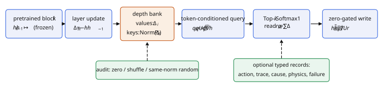
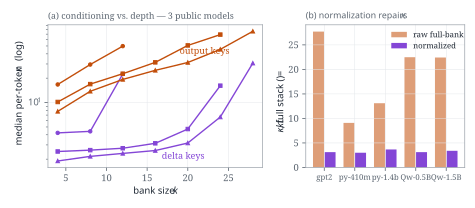
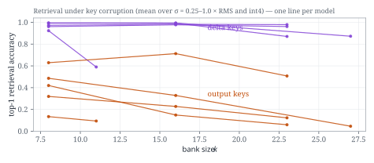
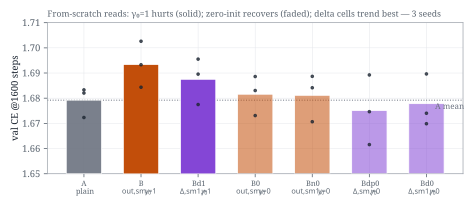
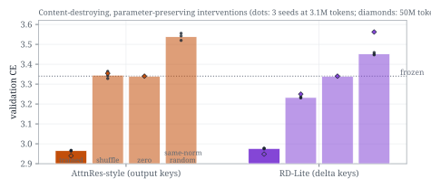

Queryable residual evidence for planners — from layer deltas to traces, latent actions, and physics residuals
Standard pretrained Transformers accumulate depth uniformly: every layer's update enters the residual stream with coefficient one, and the stream goes unqueried. Retro-DARC is a family of function-preserving adapters that turns a model's own layer-to-layer updates — its innovations, in the filtering-theory sense — into typed, queryable, causally auditable memory. The adoption core, Retro-DARC-Lite, inserts into an existing causal LM as an exact no-op: a zero-gated, null-reserving read over recent layer deltas that provably preserves the model's function at insertion and trains gate-first.
The design is grounded in a measured, replicated record on public pretrained checkpoints: bitwise logit identity at insertion on three open models; delta-key addressing that stays near ceiling under noise and int4-style corruption while output-key addressing collapses with depth; a registered twin pretrain whose from-scratch failure was diagnosed to gate-initialization shock by factorial ablation; and, at matched parameters on a converged public checkpoint, depth reads that beat LoRA while supporting an audit weight-touching adapters cannot express by construction. Four registered predictions failed and are printed beside their diagnoses.

Every number below comes from released code with machine-audited raw outputs (per-run JSONs in the repository); models are gpt2, pythia-410m/1.4b, and Qwen2.5-0.5B/1.5B on an Apple M5 Max, with a DGX Spark (CUDA) replication node.




The adapter is one file (depth_adapter.py, no project-specific dependencies) plus torch and transformers. It attaches to GPT-2, GPT-NeoX, and Qwen2 blocks via forward pre-hooks — no modeling-code changes — and at gate γ=0 your model's outputs are bitwise identical to the base. Detach restores the base exactly.
# pip install "git+https://github.com/adacyb0rg/retro-darc"
# or download the adapter kit above (module + trained checkpoints + guide)
from transformers import AutoModelForCausalLM
from depth_adapter import DepthReadAdapter, HookedDepthAdapter, get_blocks, MODEL_TABLE
model_id = "EleutherAI/pythia-410m"
model = AutoModelForCausalLM.from_pretrained(model_id)
cfg = MODEL_TABLE[model_id]
adapter = DepthReadAdapter(d=cfg["d"], ins=2 * cfg["layers"] // 3,
key_mode="delta", null=True)
hooked = HookedDepthAdapter(get_blocks(model, model_id), adapter)
hooked.attach() # γ = 0 → exact no-op (assert-verified in the kit guide)
# train adapter.parameters() only (4·64·d + 65 params), then audit:
adapter.intervention = "zero" # frozen loss returns EXACTLY
adapter.intervention = "shuffle" # removes 70–107% of the gain
hooked.detach() # base model restored bitwiseA deployed miniature of the paper's memory contract runs inside lucidre.am/memory — walkable AI-generated worlds with the paper's mechanisms as the persistence layer:
Roadmap — the platform as the paper's deployment surface. Each next feature is a paper mechanism deployed:
The paper is a 29-page technical report plus staged validation program (theory, typed world-model interface, verification plan, and a revision record of every corrected and falsified claim). Links open the PDF at each section:
The manuscript is the third public iteration of a research program run May–July 2026. The two earlier papers are preserved as released (Ada Cyborg; 35 and 39 pp, LaTeX): they registered the theory, the adapter family, and the empirical contract that the current revision then executed on public checkpoints.
@misc{cyborg2026retrodarc,
title = {Retro-DARC: Function-Preserving Residual-Memory Adapters
for Pretrained Language and World Models},
author = {Cyborg, Ada},
year = {2026},
month = {July},
url = {https://adacyb0rg.github.io/retro-darc-site/},
note = {Technical report; arXiv submission pending}
}All sources cited in the report (100 entries, as listed in its References section). Bracketed keys as cited; post-cutoff industrial systems without archival IDs are cited as dated technical announcements, and vendor-reported numbers are marked as such in the text.
[He16] He et al., Deep residual learning, CVPR 2016.
[Vaswani17] Vaswani et al., Attention is all you need, NeurIPS 2017.
[Ba16] Ba, Kiros, Hinton, Layer normalization, arXiv:1607.06450.
[LoRA21] Hu et al., LoRA, arXiv:2106.09685.
[Houlsby19] Houlsby et al., Parameter-efficient transfer learning, ICML 2019.
[MoD24] Raposo et al., Mixture-of-Depths, arXiv:2404.02258.
[LayerSkip24] Elhoushi et al., LayerSkip, arXiv:2404.16710.
[Dehghani18] Dehghani et al., Universal Transformers, ICLR 2019.
[Geiping25] Geiping et al., Scaling test-time compute with latent reasoning: a recurrent-depth approach, arXiv:2502.05171.
[MoR25] Bae et al., Mixture-of-Recursions, arXiv:2507.10524.
[AttnRes26] Kimi Team, Attention residuals, arXiv:2603.15031.
[DeltaAR26] Luo, Cai, Hu, Delta attention residuals, arXiv:2605.18855.
[OASIS26] Luo et al., Attention sinks and outliers in attention residuals, arXiv:2605.17887.
[MoDA26] Zhu et al., Mixture-of-depths attention, arXiv:2603.15619.
[MUDD25] Xiao et al., MUDDFormer, arXiv:2502.12170.
[DCA25] Heddes et al., DeepCrossAttention, ICML 2025.
[DepthAttn26] Zeng et al., Depth-Attention, arXiv:2606.05014.
Verified against live primary sources, 2026-07-26:
Dual Attention Residuals, arXiv:2607.18730
Multi-Gate Residuals, arXiv:2605.23259
Hyper-Connections, arXiv:2409.19606
mHC, arXiv:2512.24880
DeepSeek-V4, arXiv:2606.19348
KromHC, arXiv:2601.21579
LAuReL, arXiv:2411.07501
FlexiDepth, arXiv:2503.23798
Dr.LLM, arXiv:2510.12773
GateSkip, arXiv:2510.13876
LLaMA-Adapter, arXiv:2303.16199
Z. Liu, "When does Kimi's Attention Residuals work?", 2026 (kindxiaoming.github.io)
open-attention-residuals (github.com/wdlctc)
LongMem, arXiv:2306.07174
CAMELoT, arXiv:2402.13449
Larimar, arXiv:2403.11901
Prometheus Mind, arXiv:2601.15324
Trained Persistent Memory, arXiv:2603.22329
MemoBench, arXiv:2606.27537
MBench, arXiv:2606.00793
WorldRoamBench, arXiv:2606.31672
On Memory (mechanism comparison), arXiv:2512.06983
WorldMem, arXiv:2504.12369
Matrix-Game 3.0, arXiv:2604.08995
RoboMME, arXiv:2603.04639
TempoFit, arXiv:2603.07647
HAMLET, arXiv:2510.00695
MemoryVLA, arXiv:2508.19236
MAP-VLA, arXiv:2511.09516
Kimi K3 launch, kimi.com/blog/kimi-k3 (2026-07-16; weights announced 2026-07-27).
[DreamerV3-23] Hafner et al., Mastering diverse domains through world models, arXiv:2301.04104.
[Dreamer4-25] Hafner et al., Dreamer 4, 2025.
[VJEPA-24] Bardes et al., V-JEPA, ICML 2024.
[VJEPA2-25] Assran et al., V-JEPA 2, arXiv:2506.09985.
[LeJEPA25] Balestriero & LeCun, LeJEPA: provable and scalable self-supervised learning without the heuristics, arXiv, Nov 2025.
[Klindt26] Klindt, LeCun, Balestriero, When does LeJEPA learn a world model?, arXiv preprint, May 2026.
[SkyJEPA26] Rao, Zhang, Balestriero, LeCun, Loianno, SkyJEPA, arXiv:2606.23444.
[CJEPA26] Causal-JEPA, arXiv:2602.11389.
[LPWM26] Daniel et al., Latent Particle World Models, ICLR 2026 (oral).
[WAM26] Wang et al., World action models: the next frontier in embodied AI, arXiv:2605.12090.
[DreamZero26] Ye et al., World action models are zero-shot policies, arXiv:2602.15922; code github.com/dreamzero0/dreamzero; weights HF GEAR-Dreams.
[EgoScale26] Zheng et al., EgoScale, arXiv:2602.16710.
[Pi05-25] Physical Intelligence, π0.5, 2025.
[RDT24] Liu et al., RDT-1B, arXiv:2410.07864; code thu-ml/RoboticsDiffusionTransformer.
[DSL25] Lin et al., Data scaling laws in imitation learning, ICLR 2025 (oral).
[DIAL26] Chen et al., DIAL, arXiv:2603.29844.
[FastWAM26] Yuan et al., Fast-WAM, arXiv:2603.16666.
[Mu0-26] Lee, Jung, et al. (Huang & Huang labs, UMD/SNU), μ₀: a scalable 3D interaction-trace world model, arXiv:2606.13769; code github.com/Yoonkyo/mu0; TraceGen arXiv:2511.21690.
[LLaVAOV2-26] An et al., LLaVA-OneVision-2, arXiv:2605.25979.
[OVE26] Tang et al., OneVision-Encoder, arXiv:2602.08683.
[Genie3-25] Google DeepMind, Genie 3: a new frontier for world models, Aug 2025 (deepmind.google); Waymo world-model adoption, Feb 2026.
[Marble25] World Labs, Marble: a multimodal world model, Nov 2025 (worldlabs.ai).
[Cosmos26] NVIDIA, Cosmos world foundation models (Cosmos 3, arXiv June 2026).
[AMI26] AMI Labs, $1.03B seed announcement and JEPA-based world-model program, Mar 2026 (press).
[Manifold26] Manifold AI (流形空间), WorldScape / WorldScape Policy / geometry-aware world-state memory; WorldScore #1; Pre-A announcement, June 2026 (press).
[MWA26] 无界动力 & CASIA-DRL, MWA™ long-horizon bidirectional physical-causal-chain latent world model; AnyPhys; RoboCasa GR1 TableTop 75.2%, June 29, 2026 (technical announcement).
[LoopWM26] Lu, Wei, et al. (FaceMind Research Asia), LoopWM: looped world models, technical report + interview, June 2026.
[Physis26] Chen, Ji, et al. (逆矩阵/BAAI), 悟界·Physis-v0.1: next physical state prediction, BAAI Conference, June 12, 2026.
[Aether26] Huang et al. (Aether AI), Causal world models: four-layer causal brain architecture, CVPR 2026 presentation + June 2026 announcements (vendor-reported metrics).
[Momenta26] Momenta, R7 reinforcement-learning world model (Apr 2026, mass production) and HKEX listing 6880.HK, July 8, 2026.
[LiberAI26] LiberAI (将闲科技), physical world model via video–physics modality alignment; RDT lineage, 2026 (press/interview).
[KimiK3-26] Moonshot AI, Kimi K3: a 2.8-trillion-parameter open MoE model with Kimi Delta Attention, Attention Residuals / Block Attention Residuals, Stable LatentMoE (16-of-896 experts), native vision, 1M context, released July 16, 2026 (kimi.com/blog/kimi-k3; weights announced for July 27, 2026; architectural figures from launch materials pending the technical report).
[KimiLinear25] Kimi Team, Kimi Linear: an expressive, efficient attention architecture (Kimi Delta Attention; 3:1 KDA-to-global hybrid), arXiv:2510.26692.
[MemoBench26] Chen, Zhou, Hua, Zhang, Qian, Ma, Chen, Liu, Zhao, Wang, Li, Yuille, Liang, Du, MemoBench: benchmarking world modeling in dynamically changing environments, arXiv:2606.27537, ECCV 2026; code github.com/MemoBench-Team/MemoBench.
[MBench26] Zhang et al., MBench: a comprehensive benchmark on memory capability for video world models, arXiv:2606.00793.
[MIND26] Ye et al., MIND: benchmarking memory consistency and action control in world models, arXiv:2602.08025.
[OOSOM26] Ma, Liufu, Gkioxari, Out of sight, out of mind? Evaluating state evolution in video world models, arXiv:2603.13215.
[RynnWorld26] Zhao, Zhao, Huang, Li, Zhao, Li (Alibaba DAMO Academy et al.), RynnWorld-4D: 4D embodied world models for robotic manipulation, arXiv:2607.06559; code github.com/alibaba-damo-academy/RynnWorld-4D; weights HF Alibaba-DAMO-Academy/RynnWorld-4D.
[LingBot26] Robbyant (Ant Group), LingBot-World 2.0 / LingBot-World-Infinity: infinite worlds with versatile interactions (MoBA attention mask; DMD over self-rollouts; Pilot/Director agentic harness), arXiv:2607.07534; code github.com/robbyant/lingbot-world-v2, July 2026.
[SelfHarness26] Shanghai AI Laboratory, Self-Harness: harnesses that improve themselves, arXiv:2606.09498; code github.com/qzzqzzb/Self-Harness.
[GPS26] Qu, Wang, Mao, Zou, Jiang, Liu, Bai, Yang, Chen, Yang, Ji (Tsinghua × Tencent Hunyuan), Small generalizable prompt predictive models can steer efficient RL post-training of large reasoning models, arXiv:2602.01970 (reported accepted at ICML 2026); code github.com/thu-rllab/GPS.
[MoWorld26] 魔芯科技 (MoXin Tech) & Zhejiang University, MoWorld: a Flash World Model (14B MoE; ~50 FPS on Ascend NPU; global-anchor + camera-consistency memory), technical report + announcement, July 7, 2026 (moxin-tech.github.io/moworld; press-reported figures).
[SPEAR26] Ros, Tang, Leutenegger, Sunkavalli, Koltun, et al. (Manycore/群核科技 × Adobe et al.), SPEAR: reflection-based programmable simulation on Unreal Engine, ECCV 2026 (press report, July 2026).
[Meshy26] Meshy, ~$400M Series B at >¥10B post-money valuation; hybrid world-model game direction, July 20, 2026 (press/founder interview).
[HiDream26] HiDream.ai (智象未来), UiT native omnimodal architecture and HiDream-O1 model family; ¥1.5B C round (cumulative >¥2.1B across three rounds), July 2026 (press).
[Tashi26] 它石智航 (Tashi/TARS), $455M Pre-A (April 2026, reported record for China embodied AI) and AWE world-model end-to-end training (press).
[FastLeWM26] Gao, Xu (XJTU), Fast LeWorldModel: action-prefix parallel prediction for latent planning, arXiv:2606.26217; code github.com/Yuntian-Gao/Fast-LeWorldModel; page fast-lewm.github.io.
[LeWM26] Maes, Le Lidec, Scieur, LeCun, Balestriero, LeWorldModel: stable end-to-end JEPA from pixels, arXiv:2603.19312; code github.com/lucas-maes/le-wm (HF checkpoints).
[LingBotVideo26] Robbyant (Ant Group), LingBot-Video: an embodied MoE video foundation model (30B-A3B; hierarchical physics-graded RL reward; action-to-video), arXiv:2607.07675; code github.com/robbyant/lingbot-video.
[Reverie26] Reverie, Interaction Model R v0.2: adaptive streaming interaction with world-state estimation and long-term memory (founder interview + product materials, July 2026).
[SageAttn25] Zhang et al. (Tsinghua/ShengShu line), SageAttention / TurboDiffusion / Sparse Linear Attention: low-bit and sparse attention kernels and step-distillation for compute-bound multimodal inference (open-source project family; interview, July 2026).
[Kalman60] Kalman, A new approach to linear filtering and prediction problems, J. Basic Eng. 1960.
[Kailath68] Kailath, An innovations approach to least-squares estimation, IEEE TAC 1968.